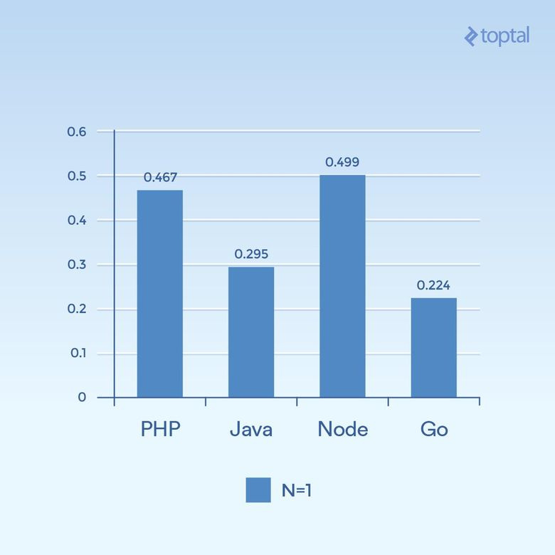
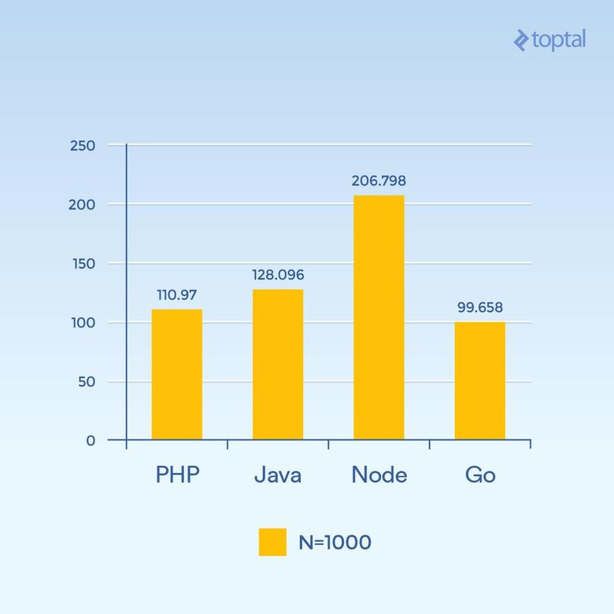
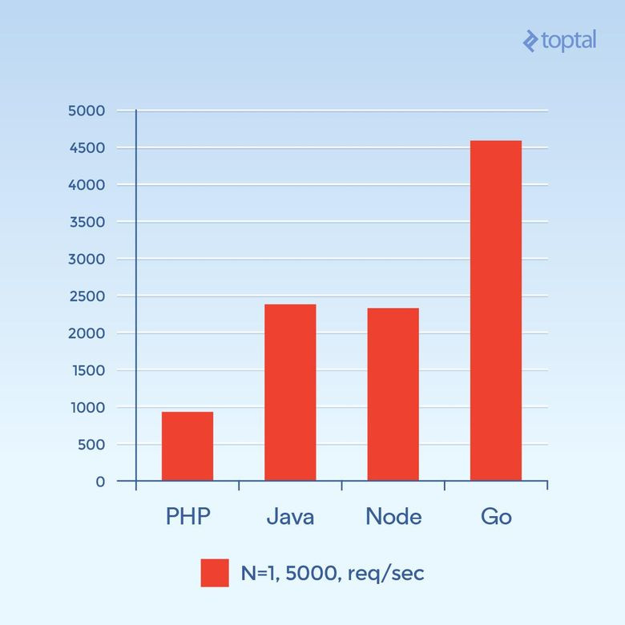

Порівняння і тести
Для порівняння, якщо вибрати кілька важливих факторів, що впливають на продуктивність і простоту використання, то виходить така таблиця:
| Мова | Потоки vs. процеси | Неблокуючі I/O | Простота використання |
|---|---|---|---|
| PHP | Процеси | Немає | |
| Java | Потоки | Доступні | Потрібні колбеки |
| Node.js | Потоки | Так | Потрібні колбеки |
| Go | Потоки (горутини) | Так | Колбеки не потрібні |
Тестування здійснювалось за допомогою простих http серверів, в окремому випадку на Go він має вигляд:
func ServeHTTP(w http.ResponseWriter, r *http.Request) {
// the underlying network call here is non-blocking
rows, err := db.Query("SELECT ...")
for _, row := range rows {
// do something with the rows,
// each request in its own goroutine
}
w.Write(...) // write the response, also non-blocking
} N=кількість викликів функції хешуванния для створення фонової нагрузки. Скільки мілісекунд потрібно на виконання всіх одночасних запитів. Чим менше тим краще 
Скільки мілісекунд потрібно на виконання всіх одночасних запитів. Чим менше тим краще 
Загальна кількість запитів в секунду. Чим вище, тим краще 
По матеріалам https://habr.com/company/mailru/blog/329258/